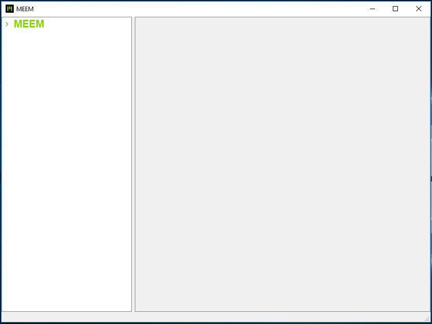

APPLICATION DE BUREAU MEEM
L'application de bureau MEEM vous permet d'afficher et transférer des données depuis votre câble MEEM vers votre ordinateur Mac, Windows ou Linux.
VEUILLEZ LIRE LE GUIDE DE L'UTILISATEUR DE L'APPLICATION DE BUREAU MEEM AVANT DE CONTINUER À LIRE CETTE SECTION.
Vous trouverez des informations exhaustives quant à l'installation et l'utilisation de l'application de bureau MEEM dans le Guide de l'utilisateur de l'application de bureau MEEM, disponible à l'adresse https://www.meemmemory.com/fr/help/, sous la section PDFs de la page Soutien.
Veuillez suivre la procédure décrite ci-dessous pour utiliser l'application de bureau MEEM sur votre appareil mobile uniquement après avoir installé l'application sur votre ordinateur :
Attendez que l'application de bureau MEEM se lance automatiquement sur l'ordinateur portable / de bureau Windows. Saisissez le code PIN à 4 chiffres qui a servi à créer un compte / configurer le nouveau câble, puis cliquez sur le bouton S'identifier (comme illustré ci-dessous).

Une fois l'identification réussie, le nom par défaut du câble, MEEM, s'affiche sur le panneau de gauche de l'écran de l'application, comme illustré par la figure 14.

À ce stade, veuillez vous référer au Guide de l'utilisateur de l'application de bureau MEEM pour connaître tous les détails sur l'affichage et le transfert de données depuis votre câble MEEM vers votre ordinateur. Vous trouverez des informations exhaustives quant à l'installation et l'utilisation de l'application de bureau MEEM dans le Guide de l'utilisateur de l'application de bureau MEEM, disponible à l'adresse https://www.meemmemory.com/fr/help/, sous la section PDFs de la page Soutien.